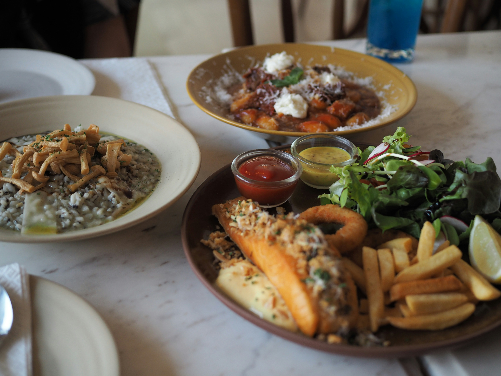
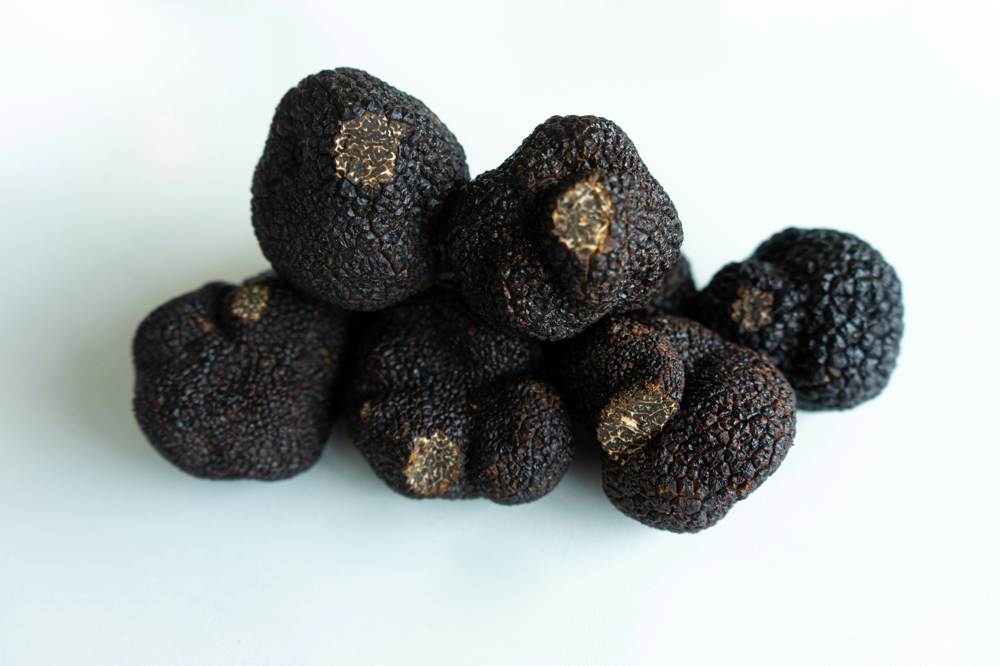
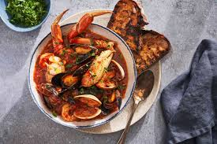

Search
Favourite
Search
Favourite

Pasta, pizza, cheese and wine are just some of the food and beverage
products linked to Italian enogastronomic traditions. Delicious
combinations handed down through the centuries transmitting the values
and essence of being Italian.
Each region has its own specialities and offers food and wine tours to
discover the varied and always tasty local cuisine.

From tagliatelle al ragù in Bologna to silky risotto Milanese, Italian pasta is a living art form shaped by region and season.

Born in Naples and recognised by UNESCO, the true Neapolitan pizza uses San Marzano tomatoes, buffalo mozzarella, and a wood-fired oven.

The prized white truffle of Alba and the black truffle of Norcia turn simple dishes into something magical. Hunted by hand and dog through ancient forests.

The Mediterranean delivers an abundance of sea urchin, swordfish, clams, and tuna, celebrated in the simplest of preparations.

Creamy gelato, flaky sfogliatelle, airy tiramisù, and Sicilian cannoli — Italy's sweet tradition is as diverse as its landscape.
Italy is home to more wine grape varieties than any other country. From Barolo to Brunello, every glass carries the soul of its terroir.